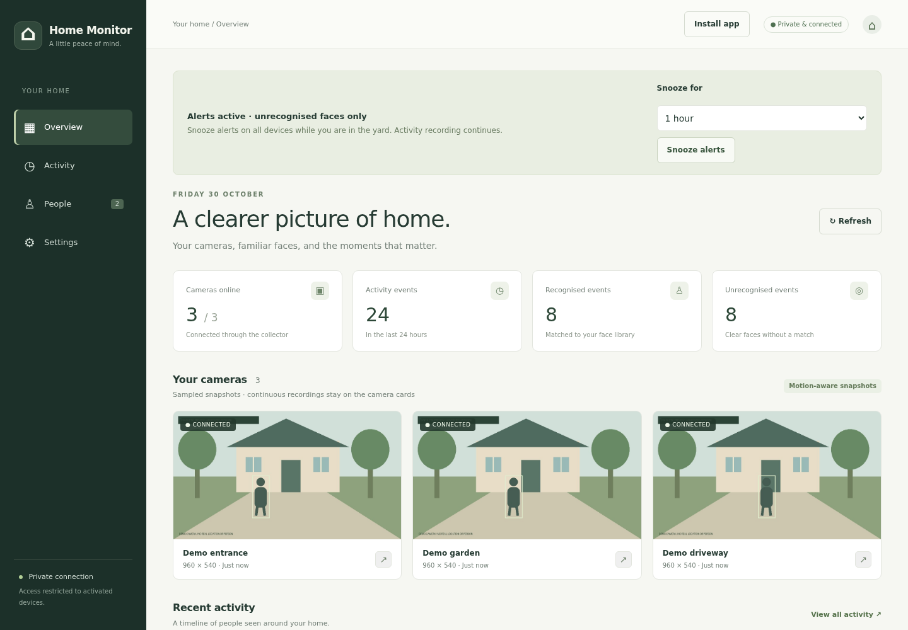
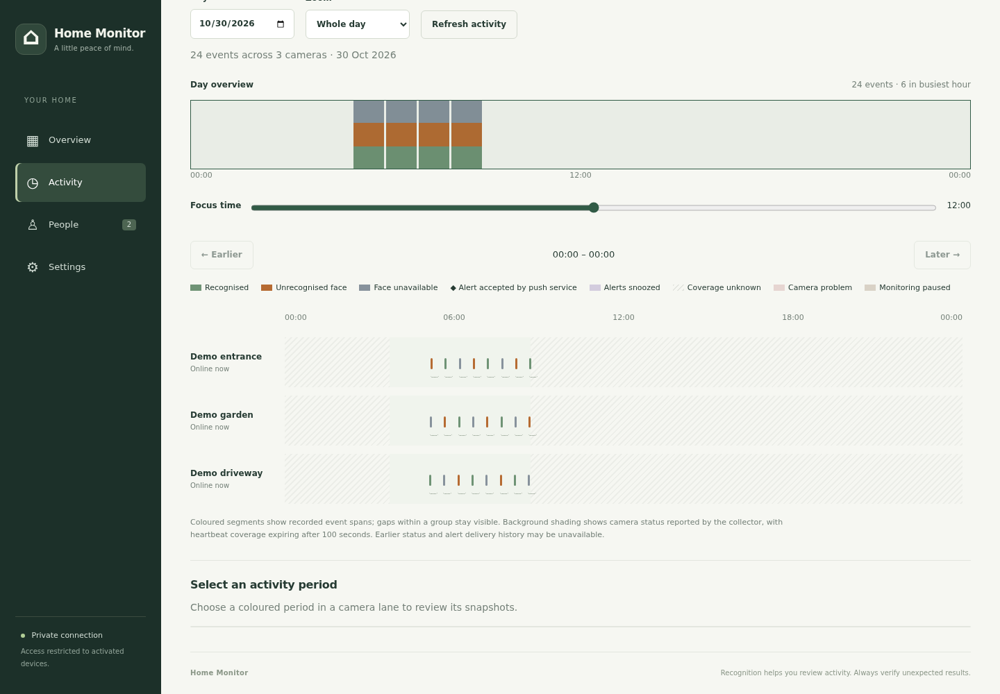
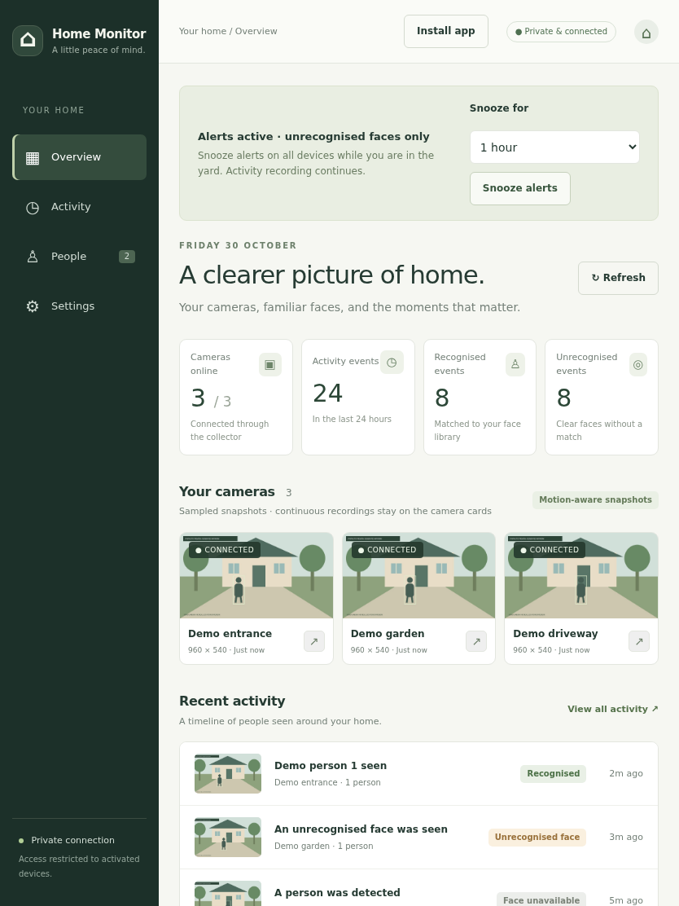
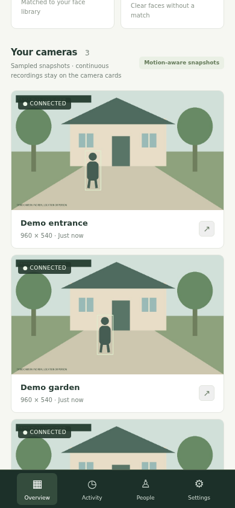

أدوات يومية
Threadmark
حوّل مجموعات WhatsApp المزدحمة وGmail إلى قائمة قصيرة بما يحتاج إليك: المدفوعات والاجتماعات والمواعيد النهائية.
كاميرات منزلك، مع التعرّف على الوجوه المألوفة على خادمك الخاص، وخط زمني هادئ لمن مرّ بك.
Home Monitor مستضاف ذاتيًا: يشغّل كل شخص نسخته الخاصة.

Home Monitor عرض مستضاف ذاتيًا لكاميرات منزلك. يلتقط جامع صغير بجوار الكاميرات لقطاتها ويرسل الإطارات عندما يتحرك شيء ما. ثم يبحث خادمك الخاص عن الأشخاص والوجوه، ويعرض النتائج في تطبيق ويب قابل للتثبيت، مع خط زمني لليوم.
يبقى الفيديو المتواصل على بطاقات SD في الكاميرات؛ ولا يحتفظ الخادم إلا بلقطات مختارة. ويعمل التعرّف على الأشخاص والوجوه على معالج الخادم نفسه، فلا تتلقى أي خدمة خارجية صورك.
التعرّف تقدير. يطابق Home Monitor الوجوه بحذر ويترك غير الواضح منها دون تعريف، لكنه لا يتحقق من أن الوجه حقيقي، ولا يضمن التعرّف، ولا يتتبع الشخص من كاميرا إلى أخرى. لا تسجّل إلا من يوافق على ذلك، وتحقّق بنفسك من المطابقات غير المتوقعة.
المشاهد والأشخاص والأحداث في هذه اللقطات من إنشاء العرض التجريبي للتطبيق؛ ولا تُستخدم أي صور حقيقية من الكاميرات.



يتكوّن Home Monitor من جزأين. لا يحتاج الجامع إلا إلى Python وPillow. ويعمل الخادم على Python 3.12 مع FastAPI وSQLite، ويستخدم OpenCV وONNX Runtime مع ثلاثة نماذج صغيرة: يعثر YOLOX-Nano على الأشخاص، ويعثر YuNet على الوجوه، ويقارنها SFace. وهو مصمم لمعالجات ARM64 دون بطاقة رسومات. تصل أنت والجامع إلى الخادم بشكل خاص عبر Tailscale؛ أما الوصول العام الاختياري فيمر عبر Cloudflare Tunnel ومستمع Caddy محصّن. المشروع مفتوح المصدر بترخيص GPL-3.0-or-later.
حوّل مجموعات WhatsApp المزدحمة وGmail إلى قائمة قصيرة بما يحتاج إليك: المدفوعات والاجتماعات والمواعيد النهائية.

تابع دفء منزلك من خلال سجل المستشعرات ومخططات الحرارة.

لوحة صغيرة لإدارة الدعوات والأجهزة عبر تطبيقات الويب الخاصة.